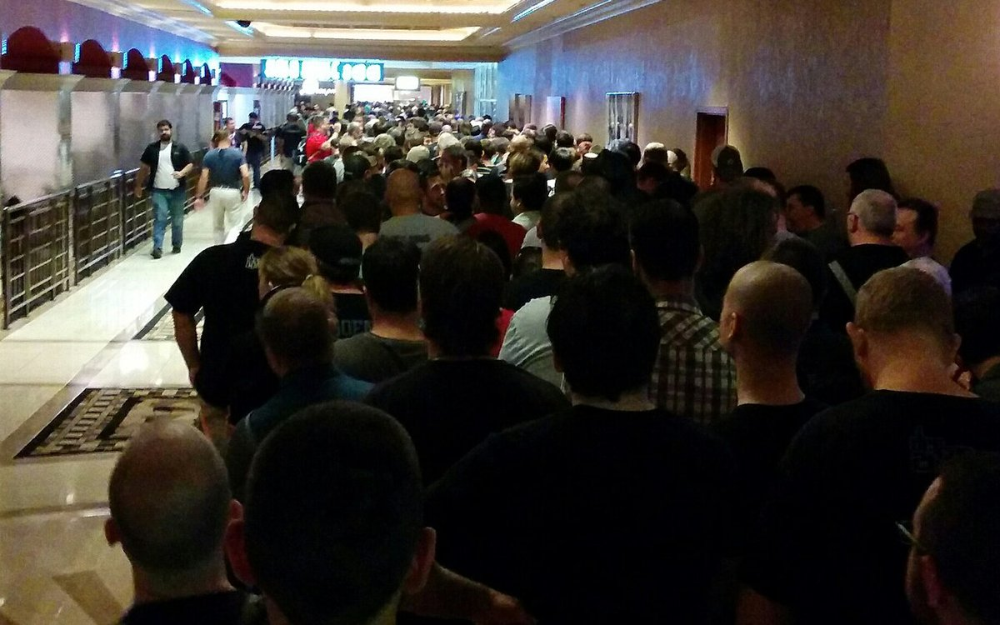
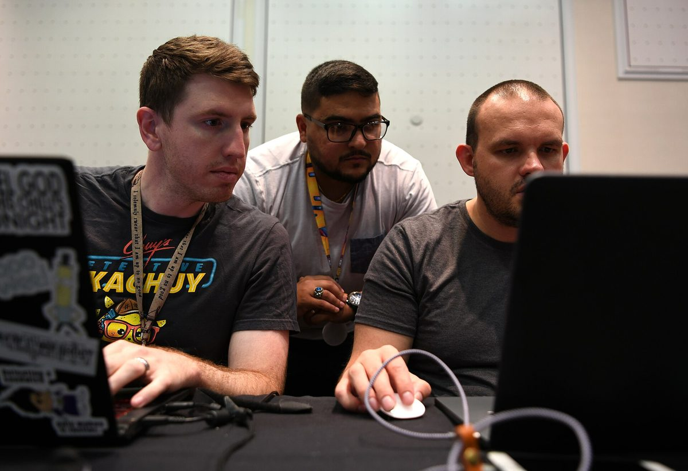
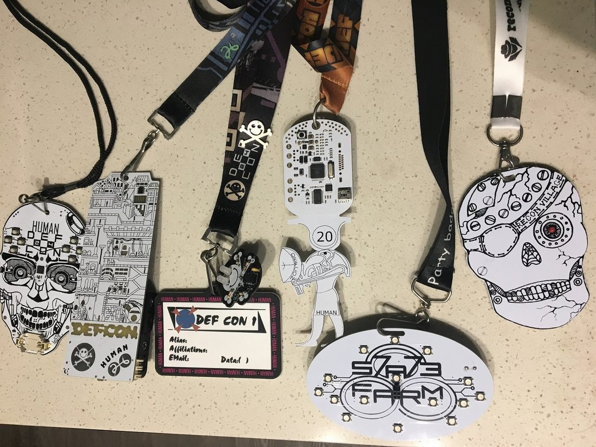
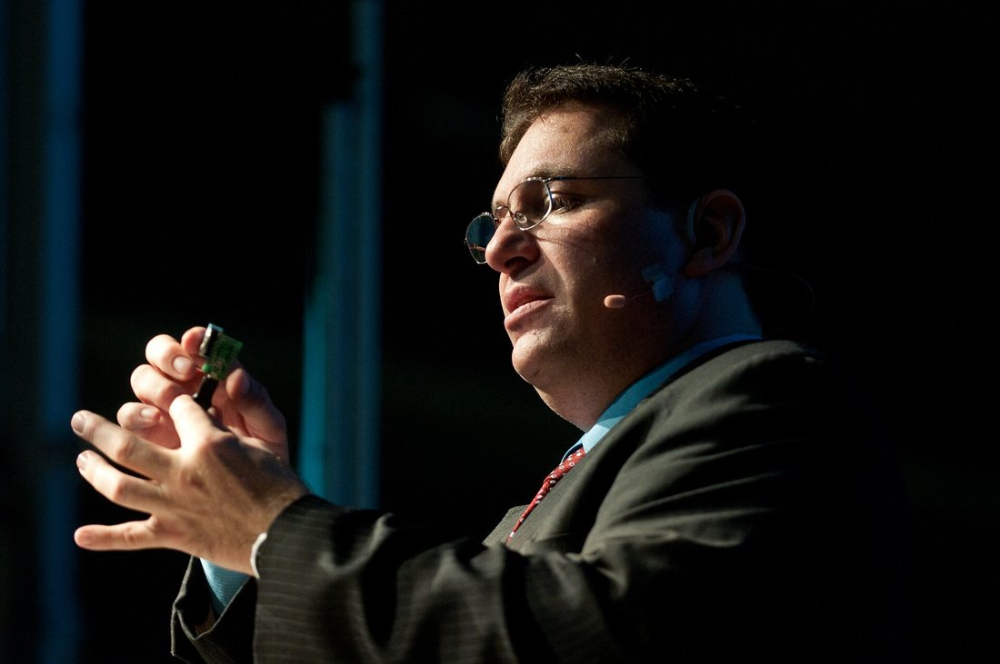
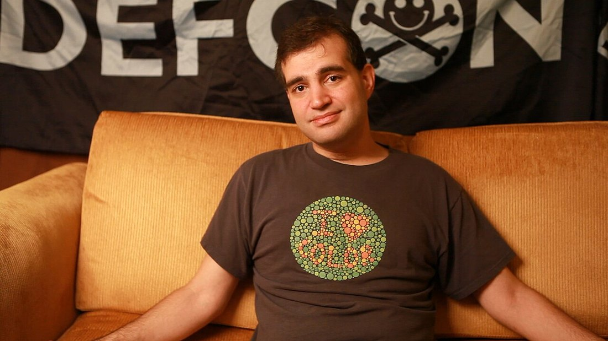

Savvy Security LLC
Hack the Handshake: Why the Age of AI Makes the Hacker Con More Important Than Ever
As synthetic influencers, AI-written résumés and agent-written code flood the zone, the one thing a model cannot fake is a person standing in a room full of peers, proving what they know.
Cover: airmen and attendees at the 90th Cyberspace Operations Squadron “Bricks in the Loop” display, DEF CON 27 (2019). U.S. Air Force photo by Tech. Sgt. Robert Biermann — public domain.
The internet is filling up with people who do not exist. Synthetic influencers, AI-polished résumés, deepfaked interviews, and even nation-state operatives wearing a borrowed face. In almost every industry, that makes verification harder. In security it does something stranger: it raises the value of the one credential a model still cannot forge — a stranger who watched you work, and is willing to put their name next to yours. That credential has an address. It is called the hacker con, and it meets within driving distance of you more often than you think. This is a field guide to it: the conventions, the people who pour themselves into it, and why — in 2026 — the handshake is quietly becoming the verification layer.
The Machine at the Microphone
The first non-human to earn a DEF CON Black Badge was a program called Mayhem, which won DARPA's Cyber Grand Challenge at DEF CON 24 in 2016 [11]. In August 2025, an AI-driven cyber reasoning system built by Team Atlanta took the $4 million top prize in DARPA's AI Cyber Challenge on the DEF CON stage [15]. Machines have been welcomed into hacker culture for a decade. But notice where they earned their trophies: at a convention, in front of people.
That detail matters, because the rest of the internet is moving the other way. Industry surveys report that 86% of creators already use generative AI in their workflow, and fully virtual personas are multiplying across platforms [1]. Research on audiences is mixed: people tend to feel more empathy toward synthetic influencers than toward human ones, yet still rate them as less authentic [1]. One tracker reports brand adoption of virtual influencers rising from 60% to 73% of surveyed companies in 2026 [3], and market forecasts point to explosive growth, although the dollar figures differ widely depending on who is counting [2][3].
My theory is simple: the cybersecurity AI influencer is coming. To my knowledge no AI persona has yet built a major following specifically inside the security community, but every ingredient is on the table. The audience is online all day, hungry for daily threat briefings, vulnerability explainers and tutorials. A tireless synthetic host can post at 3 a.m., speak any language and never miss a news cycle. Practitioners are already experimenting with these tools themselves; veteran social engineer Jayson E. Street has discussed on Security Weekly how he uses, and social engineers, AI during his engagements [29].
But security has a built-in immune system that fashion and beauty do not: its currency is demonstrated skill. A persona can summarize a CVE. It cannot pick the lock, win the CTF round, or look a stranger in the eye and be vouched for by people who watched it work. The more synthetic the feed becomes, the more valuable provenance becomes. And provenance is made in person.
This is not a new instinct in the field — it is the oldest one. In 1984, journalist Steven Levy wrote down what he called the Hacker Ethic after living among the first generation of them at MIT: a conviction that you are judged by your work, that access and sharing beat credentials, and that “hackers should be judged by their hacking, not bogus criteria such as degrees, age, race, or position” [45]. Strip away forty years and that is still the operating principle. The con is just where the judging happens with everyone in the room.
The Résumé Is Cheap Now
Hiring teams are discovering the same thing. In a March 2026 Robert Half survey, 65% of hiring managers said AI-enhanced résumés have made it harder to verify candidate skills, and another report named fraudulent and AI-generated candidates the number one hiring threat of 2026 [4]. A vendor study found that three in four résumés sent to top salaried employers contained AI-generated content [6]. Equifax's advice to employers is blunt: “trust but verify” [7].
The stakes are higher in tech. North Korean operatives have been placing fake remote IT workers inside Western companies, and Palo Alto Networks' Unit 42 reported that a single researcher with no image-manipulation experience and a five-year-old computer built a synthetic interview identity in 70 minutes [8]. Security firms report that the final step of a defensible hiring process is increasingly an in-person interview, and that many of the fake workers got in because nobody had ever seen them face to face [9]. Even KnowBe4, the security-awareness company that Kevin Mitnick helped build, reported discovering that a remote engineer it hired was a North Korean national using a stolen identity [10][28]. If it can happen there, it can happen anywhere.
Employers are responding. A Software Finder poll found 65% of hiring professionals would back mandatory live-only interviews [5], and the same coverage notes that Google's CEO has said the company is adding at least one in-person interview round to confirm fundamentals [5].
There is a fair counterpoint: in-person verification can disadvantage rural, disabled, caregiving and foreign-based candidates [12]. That is exactly why accessible, low-cost local community events matter. A neighborhood meetup or a regional con with student pricing is the cheapest verification a candidate can buy. The answer to “prove you are real” should not be a plane ticket to Las Vegas; it should be the free Tuesday-night meeting two towns over.
What a Community Actually Buys You
Everything above is the defensive case — why the world is going to start demanding in-person proof whether you like it or not. But that framing undersells the thing badly, because it treats showing up as a tax. It is not a tax. It is the single highest-return investment available to anyone trying to build a career in this field, and almost all of it is free.
In a companion piece on this blog, Everybody Lied to You About Breaking Into Cybersecurity, I worked through the hiring data at length. The short version: the “millions of unfilled jobs” shortage is real but it is concentrated at the mid-to-senior level — only about 4% of employers say entry-level roles are hard to fill. The thing actually in short supply is not chairs. It is trust — people a hiring manager can vouch for. Here is what a community gives you that a certificate cannot.

The referral is the real job board
Referrals make up a small slice of the applicant pile and a huge slice of actual hires; a referred candidate's odds of landing an interview run several times higher than a cold applicant's. A public posting sits open for weeks while a manager quietly asks their own team first. You do not beat that by applying harder. You beat it by being someone's answer when they get asked — and you can only be that answer to people who have met you. The room is the job board that never gets posted.
Mentorship, and the apprenticeship nobody advertises
Security is still, at its core, a craft passed hand to hand. The person running the lockpick village will teach you single-pin picking in twenty minutes. The graybeard at the 2600 table has debugged the exact thing you are stuck on and will tell you the war story for free. This is apprenticeship without the paperwork, and it compounds: the mentor you meet at nineteen is the reference who gets your résumé to the top of the pile at twenty-three, and the person who calls you when they need a hire at thirty.
A place to be told the truth about your work
An AI tutor will praise you. A CTF scoreboard will not. One of the most valuable things a community offers is an honest signal — a room full of people who can look at your lab writeup, your tool, or your talk and tell you, kindly or otherwise, where it is thin. That feedback loop is how beginners become competent faster than any course moves them. You cannot get it from a feed that is optimized to keep you comfortable.
Accountability, and the long game
Handles outlive jobs. In this field your reputation is a durable asset you carry from employer to employer, and it is built in public, slowly, by doing what you said you would do in front of people who remember. That is also the quiet argument for staying on the right side of the line: the same community that can vouch for you can also, permanently, decline to. It is better to take less pay and stay out of jail — and the people around you at a good con will be the first to tell you so.
Why a Room Full of Hackers Is the Last Honest Résumé
Scholars noticed long ago that hacker conferences do something ordinary conferences do not. Anthropologist Gabriella Coleman's paper “The Hacker Conference: A Ritual Condensation and Celebration of a Lifeworld” applies an anthropologist's ethnographic lens to the hacker conference as a distinct social institution [33]. Marcin Zaród's 2025 ethnography, The Sociology of Cybersecurity, studies how knowledge is created among hackers and at security conferences, comparing it to knowledge production in the sciences [34]. Douglas Haywood's ethnography of a humanitarian hacking event examined the “hacker ethic” and the extent to which these groups form a true community [35].
The community has always said so itself. The 1998 SummerCon announcement quoted Knight Lightning describing the draw as “the opportunity to meet one's heroes, partners, and idols” [17]. Today's Summercon organizers emphasize face-to-face interaction as technology increasingly mediates relationships among security people [17]. DEF CON attendees traditionally go by handles, so reputation is built on what you have done, not what your profile claims [36]. And when founder Jeff Moss asked federal agents to skip DEF CON in 2013, he framed the event as a community built on “openness, verified trust, and mutual respect” [13]. Verified trust is precisely what the AI era has made scarce.
There is a mechanic underneath this that is worth saying plainly, because it is the part that intimidates newcomers and shouldn't. Trust in this community is built by repetition, not performance. You do not have to walk in and dazzle anyone. The first time you show up to a monthly meeting you are a stranger. The second time, you are a face. The third time, you are a regular — and the third visit is where careers actually start, because that is the point at which people begin to vouch for you. Nobody is grading your entrance. They are noticing whether you come back.

A Field Guide to the Cons
DEF CON — Las Vegas
DEF CON began in June 1993 as a farewell party that Jeff Moss, then 18, organized for a friend who left town early; roughly 100 people showed up and asked him to do it again [12]. The name nods to the 1983 film WarGames and to the DEF letters on a phone keypad [12]. Its skill-testing traditions are legendary: Capture the Flag has run since DEF CON 4 in 1996 [12], and contests have included Hacker Jeopardy, Capture the Packet, Crash and Compile, and lockpicking [11]. Winners of certain contests earn a Black Badge, which grants free entry for life [11]. In 2004, DEF CON Groups launched so people could meet locally the other 51 weeks of the year [12].
Villages are the heart of it: topic-focused micro-conferences covering everything from car hacking to biohacking to ICS, with nearly half of 2019's villages brand new [14]. The r00tz Village alone drew more than 300 kids into their own CTF and lockpicking [14]. DEF CON 34 ran August 6–9, 2026 at the Las Vegas Convention Center [37], and the AI Village opened a poster track on adversarial attacks against agents and agentic systems [16]. What started as a hundred people in a Las Vegas hotel is now tens of thousands, and it has never stopped being a place where a nobody can become a somebody over a single long weekend.

DerbyCon — Louisville
Dave Kennedy, Martin Bos, Adrian Crenshaw and Alex Kah founded DerbyCon in 2011 in a Louisville pizza shop after a Metasploit course; the first conference drew about 1,000 people [20]. It ran nine years. At the final show, September 6–8, 2019, attendees played CTFs spanning network, OSINT and IoT challenges and supported the charities Rural Tech Fund and Hackers for Charity [20]. Kennedy called the finale something that “went better than any other year I can remember” [19], after announcing the end because of “negativity, polarization, and disruption” from a small group [18]. He told Malicious Life it was all about “making the community a family,” and that none of the founders made money from it [21]. The community carried on in smaller groups around the world [19].
CircleCityCon — Indianapolis
CircleCityCon began as Indianapolis' first major security conference, with 240 attendees and more than thirty recorded talks [22]. By CircleCityCon 10.0 in June 2023, attendance topped 700 and the con ran a murder-mystery game that blended social engineering, lockpicking and forensics [22]. Its listing says plainly that “CircleCityCon is about the community” [22], and it advertises free community-led training, villages for lockpicking, hardware hacking and ham radio, a CTF, student pricing of $50, and a Grants Program funded by its swap-and-auction proceeds [22].
SkyDogCon — Nashville
SkyDogCon is a Nashville October tradition for people of broad curiosity, mixing hacking, making and security. Its stated purpose is to “facilitate learning, information sharing, and mingling with open-minded people” [23]. Past events have included a CTF organized by James Bower, a Hacker Poker Run, workshops, and a volunteer-examiner team offering amateur radio licensing [23]. Its 2016 announcement invited hackers, makers, locksport fans and everyone between to “connect to your kind” [23]. I could not confirm 2026 dates from public sources, so check skydogcon.com directly.
Outerz0ne — Atlanta
Outerz0ne launched in March 2005 in Marietta, Georgia, with free general admission [24]. Early hacker-con directories listed it as an Atlanta security conference with free admission [24], and a SkyDogCon staff bio credits one organizer with establishing and running both Outerz0ne and SkyDogCon [23]. Free entry is the point: it lowers the bar for the curious newcomer.
HackMiami — Miami Beach
HackMiami gatherings began informally in 2008 as biweekly meetings of computer-science students, and the group incorporated in 2009; its first conference ran May 17–19, 2013 in Miami Beach [25]. Co-founder Alex Heid described it to Slashdot as “one of the first hackerspaces that came out of South Florida” [25]. The program has tracked the moment: 2024 was its “deepfake year,” and 2026's HackMiami 1101 pivoted to AI and agentic security [25].
National Day of Civic Hacking
First held in 2013 as a joint effort of the U.S. government, Code for America and other partners [27], the National Day of Civic Hacking is the friendliest on-ramp of all. Code for America says plainly that “hacking skills are not required” [27]. Lawyers, designers, researchers and citizens join local Brigades to work on public problems; the ninth edition in 2021 built a national 911 Open Data Scorecard [27]. Code for America's network director once called it the “culmination and leveling up of work that's been going on all year” [27]. I could not confirm a 2026 date; ask your local Code for America Brigade.
The other 51 weeks
The big-name cons are the fireworks. The real engine of a career is what happens between them — and that network is dense, local and almost entirely free.
- DEF CON Groups (DCGs) are official local chapters that meet monthly, created in 2004 for exactly this reason [12]. Find the one nearest you and you have a standing monthly appointment with your field.
- BSides is the community's answer to the big commercial conference. It was founded in 2009 by Mike Dahn, Jack Daniel and Chris Nickerson out of a pile of talks that could not fit on the Black Hat schedule — the name is a nod to the B-side of a record — and it has since grown into hundreds of free or low-cost, volunteer-run events in cities all over the world [41]. For most people, a local BSides is the single best first con there is.
- 2600 meetings happen on the first Friday of every month, in public, in cities worldwide, organized out of 2600: The Hacker Quarterly — open to anyone who walks up [42].
- OWASP chapters run free local meetings for anyone interested in application and web security [43], and hackerspaces — member-run community workshops catalogued worldwide at hackerspaces.org — give you a physical room, tools and people year-round [44].
None of these require a plane ticket, a sponsor, or permission. They require that you walk in the door.
The People Who Pour It Out
A community is not an abstraction. It is specific people who decided, usually for no money, to build the room the rest of us walk into. These are a few of them — a deliberately incomplete list, because half the point is that you will meet your own.
Jeff Moss, “The Dark Tangent.” Founder of DEF CON and the Black Hat Briefings; later ICANN's chief security officer and a member of the Homeland Security Advisory Council [12][13]. He turned a going-away party into the largest hacker gathering on earth and then spent decades defending its culture of openness and verified trust.

Kevin Mitnick. Died July 16, 2023 at age 59 after a 14-month battle with pancreatic cancer. KnowBe4 remembered him as surpassed only by his talent as “the original social engineer,” and his memoir Ghost in the Wires became a bestseller [28]. His central message: people are the weakest link, and most breaches begin with social engineering [28]. His arc — from the FBI's most-wanted hacker to the co-owner of a security-awareness company — is the community's favorite proof that the door back in is always open to someone willing to do the work in the light.
Dave Kennedy, “HackingDave.” A Marine who served two tours in Iraq, founder of TrustedSec, co-founder and Chief Hacking Officer of Binary Defense, creator of the Social-Engineer Toolkit, and a founding member of the Penetration Testing Execution Standard [31]. Co-founder of DerbyCon [20] — which, remember, he and his partners ran for nine years without taking a profit, purely to make the community a family [21].
Jayson E. Street. Author of the Dissecting the Hack series, DEF CON Groups Global Ambassador, and a speaker at the first six DerbyCons [29]. He famously summarized one engagement: “I robbed a bank in Beirut, Lebanon, wearing a DEF CON leather jacket” [29]. He prefers “Hacker, Helper, and Human” as a title [29] — three words that are as good a mission statement for the whole community as any ever written.

Dan Kaminsky. In 2008 Kaminsky discovered a fundamental flaw in DNS — the internet's address book — that could let an attacker impersonate essentially any website, intercept email, and defeat “forgot my password” recovery across the web [40]. He could have sold it. Instead he phoned Paul Vixie, who reportedly said everything in the digital universe was going to have to get patched, and Kaminsky spent weeks coordinating a secret, synchronized fix across Microsoft, Cisco and the rest of the industry before disclosing it responsibly on the Black Hat / DEF CON stage [40]. He later became one of the small handful of people trusted to hold a key to the DNSSEC root. When he died in April 2021 at just 42, the obituaries called him the man who once saved the internet [40]. He is the clearest answer to anyone who thinks the word “hacker” means “criminal.”
Deth Veggie of the Cult of the Dead Cow. The legendary hacktivist collective began in the 1980s publishing text files. Speaking to the BBC, Deth Veggie (Luke Benfey) said the group's goal was to “bring information to people that they normally wouldn't ever see” [32]. The cDc's alumni roll is a quiet argument all by itself: among its members was Peiter Zatko — “Mudge” — who in 1998 sat before the U.S. Senate with six fellow members of the L0pht and testified that they could take down the internet in thirty minutes, then went on to run programs at DARPA, work security at Google, and serve as a federal whistleblower on platform security [38][39]. Another former teenage member, it later emerged, was a sitting U.S. congressman [32]. The people who publish the text files grow up to advise the government.
G. Mark Hardy. Founder and president of National Security Corporation since 1988, retired U.S. Navy Captain who served in command nine times, SANS instructor, and speaker at more than 250 events worldwide [30].
Alexander Heid. Co-founder of HackMiami with James Ball and Rod Soto, formerly of Prolexic's threat-intelligence team during the Operation Ababil DDoS campaigns, and a research executive at SecurityScorecard from 2014 [25][26]. He built, from a handful of South Florida students meeting every other week, a conference that now sets the agenda on deepfakes and agentic AI.
Notice what these people have in common. Not one of them is famous for a credential. They are famous for something they did — built, broke, disclosed, defended, or organized — in a way other people could see and verify. That is the only kind of fame this field actually respects, and it is available to you.
The Unwritten Rules — How to Turn a Con Into a Career
Walking in is most of the battle, but a few habits turn a weekend badge into a network that pays you back for twenty years.
Never touch the network. Don't scan, sniff, or “test” anything at a con or meetup. It is the fastest way to get permanently uninvited from everything, and it is the one mistake the community does not forgive. Only ever test systems you are authorized to test.
Don't ask “how do I get into cyber?” It is the most-asked, least-answerable question in the field. Ask something specific instead: “I finished a SOC path and built a home detection lab. I'm targeting analyst roles. What gap would you notice first on my résumé?” Specific questions get generous answers. Vague ones get a polite nod.
Bring something. Snacks, a ride, a hand hauling gear, a clean summary of a talk nobody else wrote up. The fastest route from stranger to regular is being useful before you are impressive.
Then give more than you take. Volunteer at the registration desk. Help run a village. Submit a talk to your local BSides — the bar is lower and the welcome warmer than you think, and these cons run entirely on volunteers [22][41]. Every person profiled above started by contributing to a room, not by extracting from it. That is not charity; it is the mechanism. You build yourself by building the thing other people are standing in.
Your Move
The hacker con was never about the badge. It is a place where a stranger can watch you work, vouch for you, and teach you something you could not learn from a feed. In an age when a résumé, a LinkedIn profile and even a video interview can be generated, the handshake is becoming the verification layer.
Cons like these changed my life. They shaped my path and showed me what I am capable of. They can do the same for you.
- Find your people. Locate your nearest DEF CON Group [12], local BSides [41], or 2600 meeting [42] and go to the next one.
- Test your skills. Play a CTF, try the Lockpicking Village, or take a free training class. Only ever test systems you are authorized to test.
- Go three times. Pick one recurring meeting and attend it three months running. Stranger, face, regular — that third visit is where it starts.
- Give back. Volunteer, submit a talk, or help a newcomer. Every con above runs on volunteers.
- Start small if you need to. Free and student-priced cons exist precisely so cost is not a barrier [22][24][41].
The AI influencers are coming, and some of them will be good. Go anyway. Be the person in the room.
Not sure where your nearest room is? There's a free map of 5,000+ community spots nationwide.
Open the US Cyber Resource Map →Images. Cover & capture-the-flag photo: U.S. Air Force, by Tech. Sgt. Robert Biermann (public domain). Cyber Grand Challenge stage: Tony Webster, CC BY 2.0. DEF CON 22 registration line: Sonofapharmacist, CC BY-SA 3.0. Conference badges: Sephiroth storm, CC BY-SA 4.0. Kevin Mitnick: Eneas De Troya, CC BY 2.0. Dan Kaminsky: Jason Scott, CC BY 2.0. All via Wikimedia Commons.
A note on method. Where I could not confirm a 2026 date or detail from public sources, I have said so and pointed you to the organizer. This community rejects hand-waving and invented facts; so does this piece.
Sources
- CreatorIQ, “Influencer Marketing Trends 2026” — creatoriq.com
- Research and Markets, “Virtual Influencers Market Report 2026” — researchandmarkets.com
- Call Your Girlfriend, “AI Influencer Statistics 2026” — callyourgirlfriend.com
- StaffingHub, “AI-inflated résumés” (Robert Half and GoodTime data) — staffinghub.com
- HCAmag, “Hiring professionals back live-only interviews” — hcamag.com
- Cadient report, June 3, 2026 — agilebrandguide.com
- CB Insights / Equifax report coverage, July 30, 2026 — cbinsights.com
- Palo Alto Networks Unit 42, real-time deepfake DPRK IT workers — unit42.paloaltonetworks.com
- Tech Monitor, “Remote hiring cybersecurity” — techmonitor.ai ; The Register, “You have a fake North Korean IT worker problem” — theregister.com
- Ross Clennett, DPRK deepfake hiring summary (KnowBe4 case) — rossclennett.com
- Wikipedia, “DEF CON” — en.wikipedia.org
- InfoSecMap, “DEF CON — History” — infosecmap.com ; Decision Intel, “The Hiring Verification Crisis” — decision-intel.shapingtomorrow.com
- CBS News, “Defcon to feds: Stay away” — cbsnews.com ; The Register — theregister.com
- OODA Loop, “DEF CON is the most valuable security conference” — oodaloop.com
- DARPA — darpa.mil ; The Record — therecord.media
- AI Village @ DEF CON 34 — aivillage.org
- Wikipedia, “Summercon” — en.wikipedia.org ; SummerCon X announcement (1998) — cliplab.org
- TechTarget, “This year's DerbyCon conference will be the last” — techtarget.com
- TechTarget, “DerbyCon attendees and co-founder reflect on the end” — techtarget.com
- Los Alamos Daily Post, “DerbyCon 2019: Finish Line” — ladailypost.com
- Malicious Life, Season 3 Episode 124 (Dave Kennedy) — malicious.life
- CircleCityCon: Cyware listing — cyware.com ; TechPoint (10.0) — techpoint.org ; CSO Online — csoonline.com ; CentralEyes — centraleyes.com
- SkyDogCon — skydogcon.com ; 2016 announcement ; skydogcon.com
- InfoCon, “Outerz0ne one (2005)” — infocondb.org ; Hacker con directory — classicistranieri.com
- HackMiami — about ; history ; Slashdot interview — it.slashdot.org
- (ISC)² speaker bio, Alexander Heid — events.isc2.org
- Code for America — codeforamerica.org ; TechCrunch (2013) — techcrunch.com ; GovTech — govtech.com ; INE — blog.ine.com
- eSecurityPlanet — esecurityplanet.com ; Dark Reading, “Kevin Mitnick Dies Aged 59” — darkreading.com ; DuoCircle — duocircle.com
- Jayson E. Street: Secure Yeti bio — secureyeti.com ; Help Net/SecNews interview — secnews.gr ; Security Weekly PSW #818 — scmagazine.com ; Cybersecurity360 — cybersecurity360.it
- G. Mark Hardy: Dark Reading — darkreading.com ; BSIUS — bsius.com
- Binary Defense, Dave Kennedy bio — binarydefense.com ; IANS Research — iansresearch.com
- Cult of the Dead Cow, BBC Panorama interview transcript — textfiles.com mirror ; Wikipedia, “Cult of the Dead Cow” — en.wikipedia.org
- Gabriella Coleman, “The Hacker Conference: A Ritual Condensation and Celebration of a Lifeworld” — ethicsatwork.nd.edu
- Marcin Zaród, The Sociology of Cybersecurity (Routledge, 2025) — taylorfrancis.com
- Douglas Haywood, “The Ethic of the Code,” Journal of Peer Production No. 3 (2013) — p2pfoundation.net
- NordVPN, “DEF CON” (handle tradition) — nordvpn.com
- GovEvents, “DEF CON 34” — govevents.com
- L0pht Heavy Industries, U.S. Senate testimony, May 19, 1998 — Wikipedia, “L0pht” — en.wikipedia.org ; “Hackers' Testimony at the United States Senate” — ethicsatwork.nd.edu
- Peiter “Mudge” Zatko — Wikipedia — en.wikipedia.org
- Dan Kaminsky — Wikipedia — en.wikipedia.org ; The Boston Globe, “Daniel Kaminsky, Internet savior, dies at 42” — bostonglobe.com
- Security BSides — Wikipedia — en.wikipedia.org ; CSO Online, “Security B-Sides: Rise of the anti-conference” — csoonline.com
- 2600 Meetings — 2600.com
- OWASP local chapters — owasp.org
- Hackerspaces directory — hackerspaces.org
- Steven Levy, Hackers: Heroes of the Computer Revolution (1984); the Hacker Ethic — Wikipedia — en.wikipedia.org